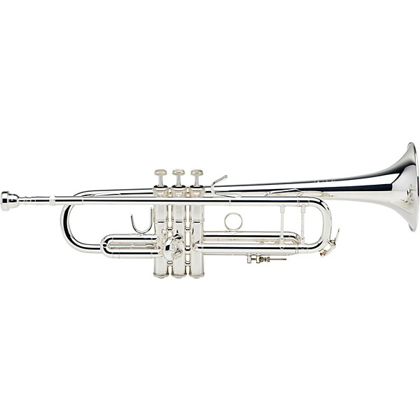

|  |
Guillermo Pardo
I am a professional musician specialized in trumpet and as a complementary instrument I play piano. |
Vocational School of music Luis Casas Romero
Conservatory of Music Jose White
| Piano | ⭐⭐⭐⭐⭐ |
| Trumpet | ⭐⭐⭐⭐⭐ |
| Reading Music | ⭐⭐⭐⭐⭐ |
| Theory of music | ⭐⭐⭐⭐ |
| History of music | ⭐⭐⭐ |